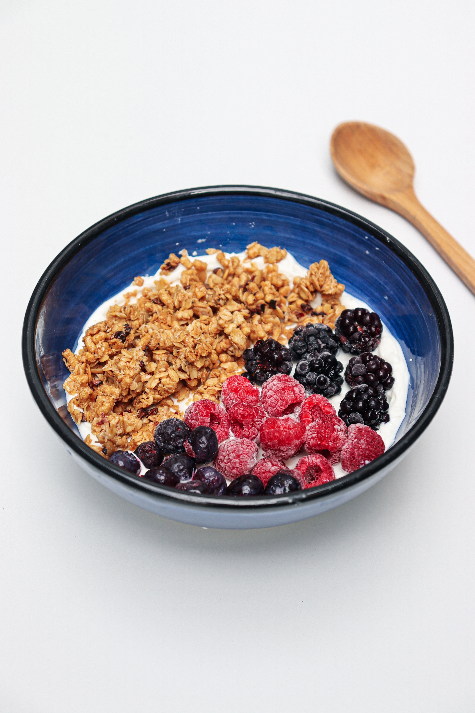
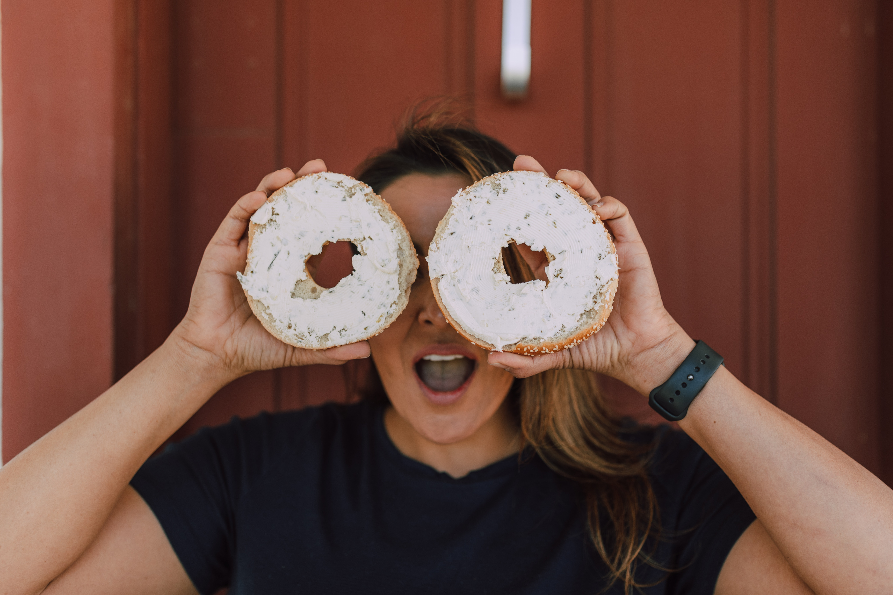
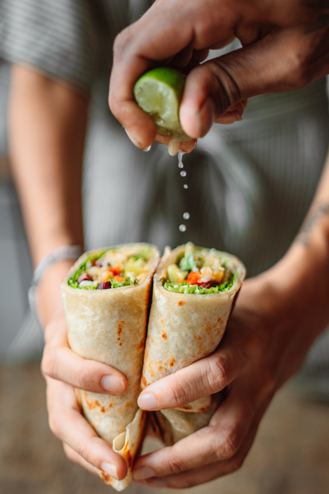
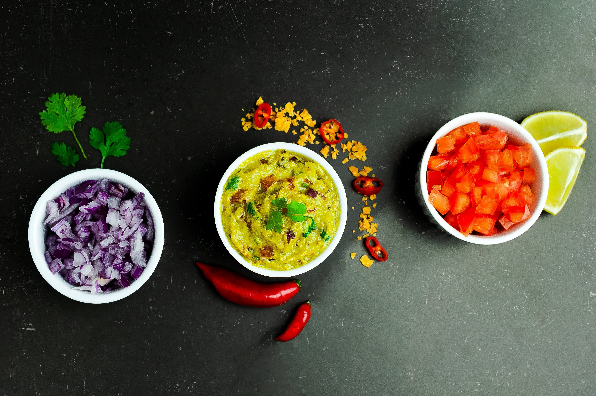
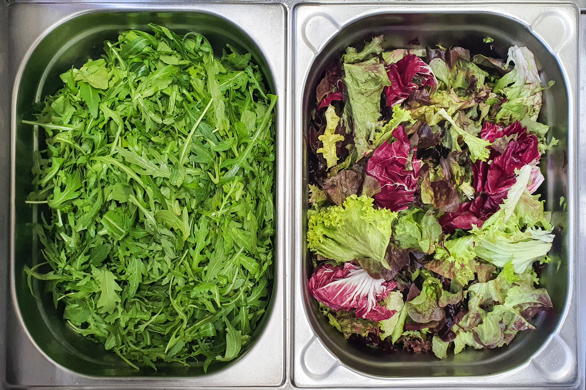

Breakfast!


First step: Breakfast. The key to starting the day right as my mom would say. Finding the time for this meal however, a serious challenge. Classes start early, for me 8am or 9:30am everyday so I found myself skipping this meal many times at the start of the day. However, this leaves me lacking energy just an hour later. Now, I make it a point to visit the dining hall each morning. Here’s a few of my go-to’s:
-
Yogurt with Granola and Fruit
- Yogurts are served every day in the dining hall, they are low in calories, sugars, and high in proteins. You can switch the flavors, add many fruits, it does not get old.
-
Bagel with Cream Cheese
- This is my go-to if I need something quick and easy to last me a long time. The bagels fill you up and will keep you fueled all day.
Lunch!


Second: Lunch. My personal favorite meal of the day. For lunch, I like to keep it light. I try to find a healthy option and avoid the chicken tender Thursdays or pizza buffets. The dining hall and Schine are great options.
-
Veggie Wrap
- The best section of the dining hall in my opinion is the sandwich/wrap station. Here, there are many deli meats, cheeses, and veggies that can create the perfect sandwich.
- The best combination: Spinach wrap, hummus, cucumbers, bell peppers, shredded lettuce, cheddar cheese, mayo, and chipotle ranch sauce.
-
CoreLife
- There are so many great options at core life. Salads, rice bowls, soups, etc! But, be sure to go during a slow time, crowds can get big right at lunch time.
- My favorite is the spicy chicken salad. It’s just romaine, rice, broccoli, corn, and spicy chicken. I love Corelife because it is so easy, but so filling.
Dinner!


Finally: Dinner time!! For dinner my favorite foods are home cooked meals. I had a very hard time getting myself to the dining hall at first, but there are some options, it just takes some searching.
-
“Chipotle” Bowl
- Shaw dining hall recently introduced new rice bowls. This is my favorite part of the dining hall because it is a healthy meal that gets in some protein and doesn’t taste all that bad. I like to have rice, peppers, chicken, guacamole, and cheese on my bowl.
-
Salad Bar
- Consistent. The salad bar is always there, it’s a go to. There are usually a few lettuce options, lots of veggies for toppings, and some chicken to add on top too.